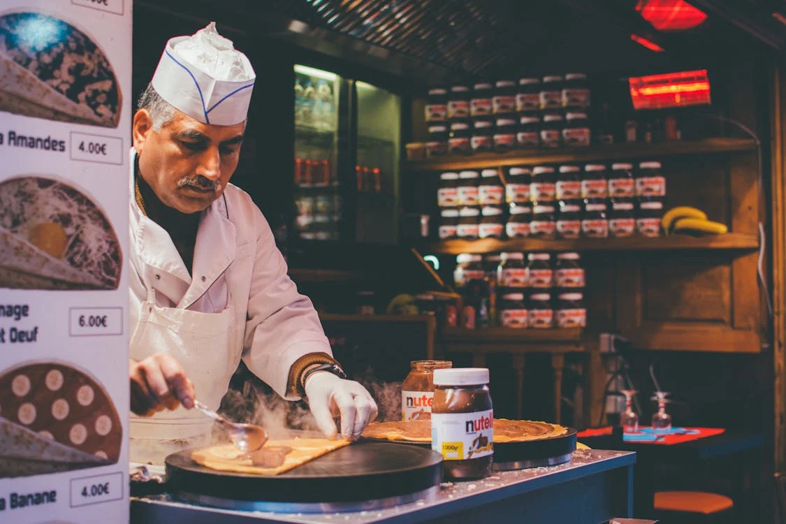

Recept koji vrijedi probati!
Najpotrebnije za početak:
Od sastojaka vam je potrebno:
- 22jaja
- 400 grama glatkog brašna
- 400 ml mlijeka
- 400 ml gazirane vode
- 2 žlice ulja
- 2 žlice otopljenog maslaca
- prstohvat soli
Priprema:
- Umutiti jaja, dodati polovicu mlijeka te sve lijepo sjediniti zatim dodati drugu polovicu mlijeka, gaziranu vodu, ulje, maslac, sol i lagano dodavajući brašno umutiti dok se ne pretvori u sjedinjenu smjesu
- Ostaviti da stoji 20ak minuta
- Tavu za palačinke podmazati s par kapi ulja te ju dobro zagrijati
- Istresti jednu kutlaču smjese te ju ravnomjerno rasporediti po tavi, nakon par minuta preokrenuti palačinku na drugu stranu

